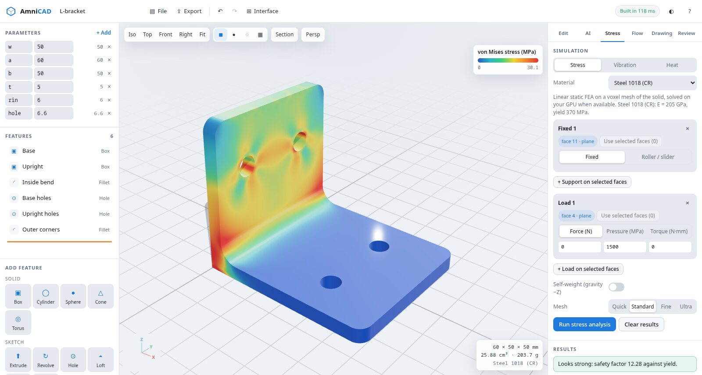
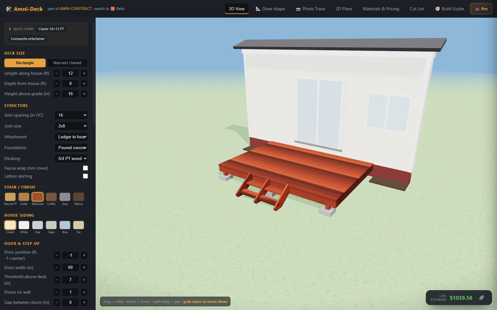
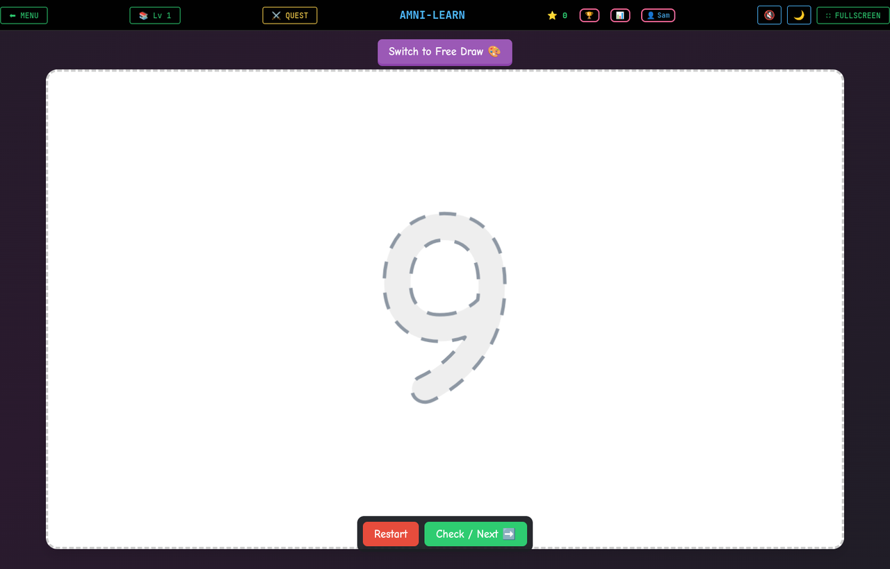
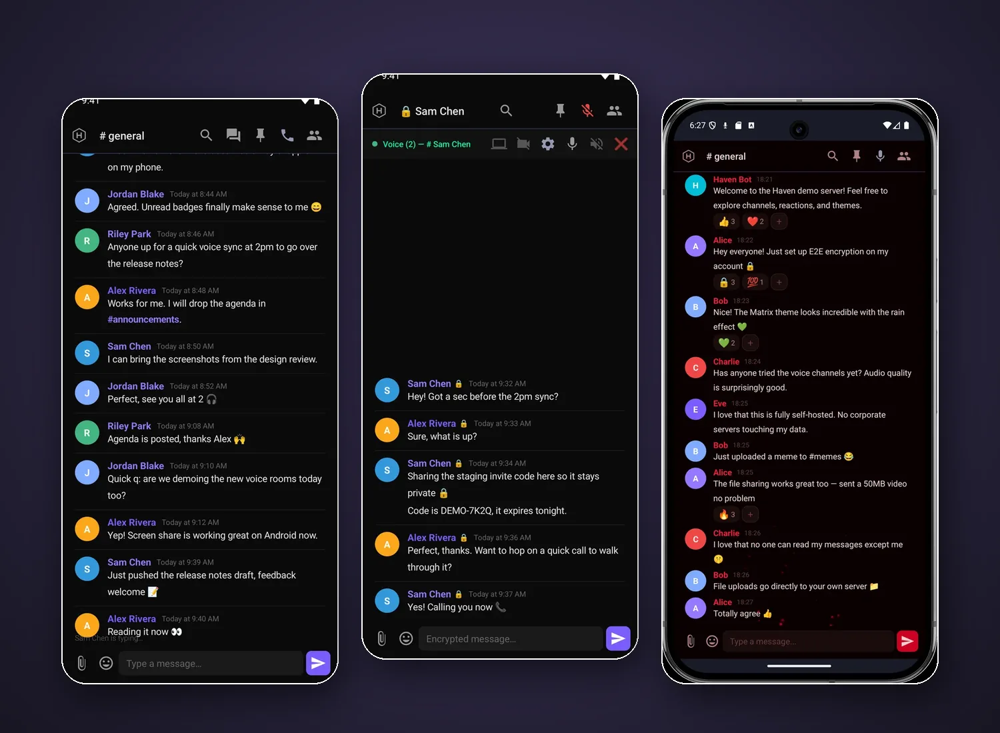
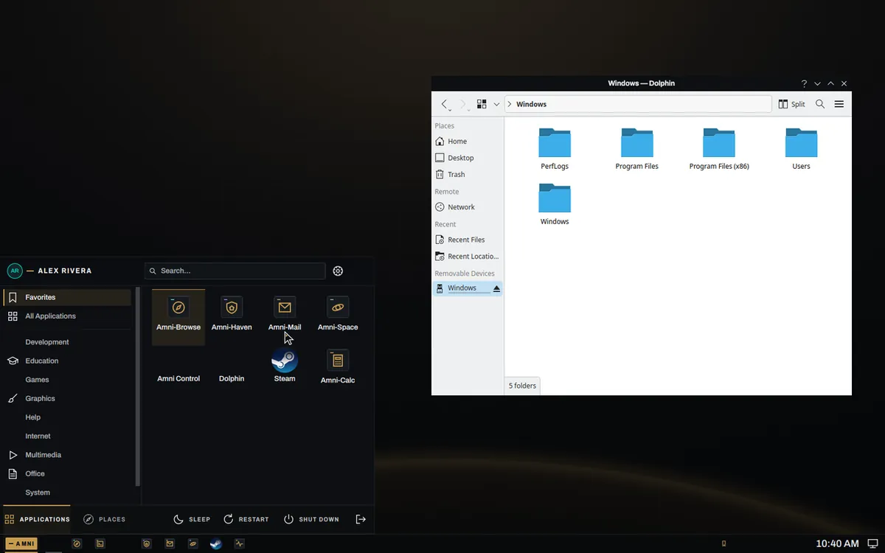
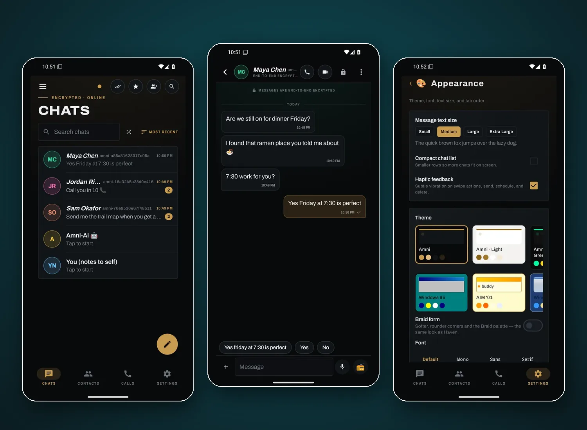

Amniscient, LLC — independent studio
I build engineering tools, learning games and privacy-first software. Most of it runs right in the tab you already have open, and none of it watches you.
Windows · Linux · macOS — open beta
One table for every AI you already pay for. Ask one question and each AI answers it, reading the answer before its own.
New — free, runs in your browser
Parametric 3D CAD that tests its own parts, in inches or millimeters. Model with real OpenCascade solids, run stress, vibration, heat and wind-tunnel analysis on your GPU, generate toleranced 2D drawings, and export STEP. Bring Claude, ChatGPT, Gemini or a local model, or pick the Workshop or Blueprint layout.

Decks · patios · pools · framing
Plan your backyard build on screen. Trace your actual yard from a photo, set the scale with two clicks, and build it. Printable construction plans and a priced cut list come out the other end.

Pre-K through college prep
125 games plus guides: tracing, phonics, math, typing, STEM labs, and brain training for the adults in the room. No accounts, no sign-up, just play!

Android · iPhone · desktop · free
Chat on a server you own. Channels, encrypted direct messages, voice and video calls and screen share, with apps for Android, iPhone, Linux, Windows and macOS.

Free ISO · v0.5.0
A Linux desktop for people leaving Windows. Start menu, bottom bar and double-click like you’re used to, with Steam, Wine, a local AI and restore points already on it, and buttons instead of commands.

Beta · Android · iPhone · web
Encrypted texts, photos, voice notes and calls, sealed on your phone before they leave it. Make it your default texting app on Android, or run your own relay.

Apps and games for Android and iPhone.
Seventeen more things I’ve built: tools, experiments and research.
The references people land on most.
Just me: one engineer, no funding, and one rule about what leaves your machine.
The browser has no telemetry, the learning games collect nothing, and the AI assistant runs on your own GPU. Where something really does need a server, like messaging or licence checks, it's a server you can run yourself. And every product spells out exactly what data it touches in its own privacy policy, not one blanket page.
I put the graphics card and parallel code to work wherever the job deserves it, on the desktop and in the browser. A galaxy of 160,000 stars and a beam calculator both belong in a browser tab, and both run there!
These are working tools, so the calculators cite the standard they follow and ship a worked example you can check by hand. The architecture is documented, the changes are logged, and anything that claims a number can show you where that number came from.